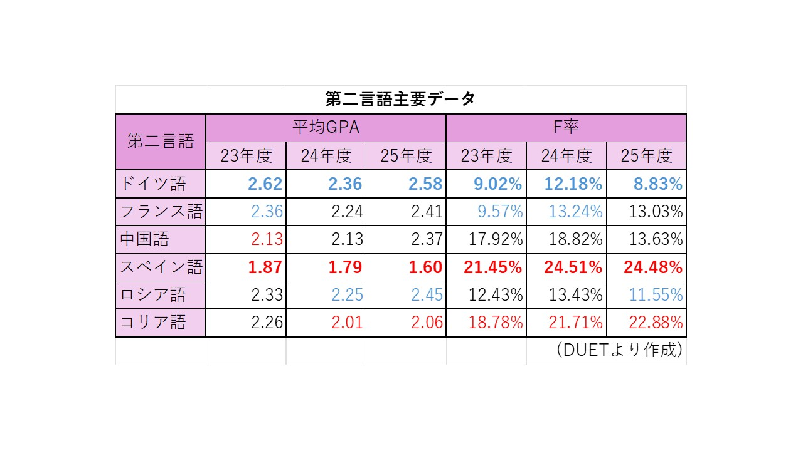
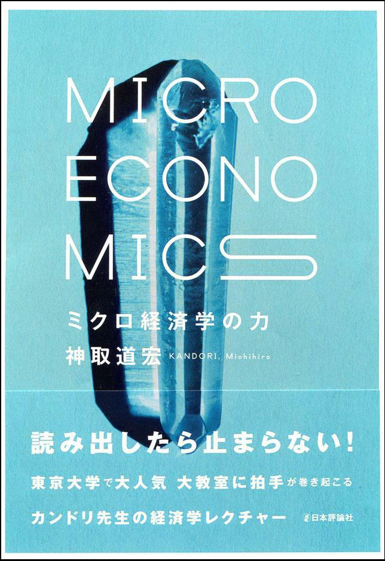
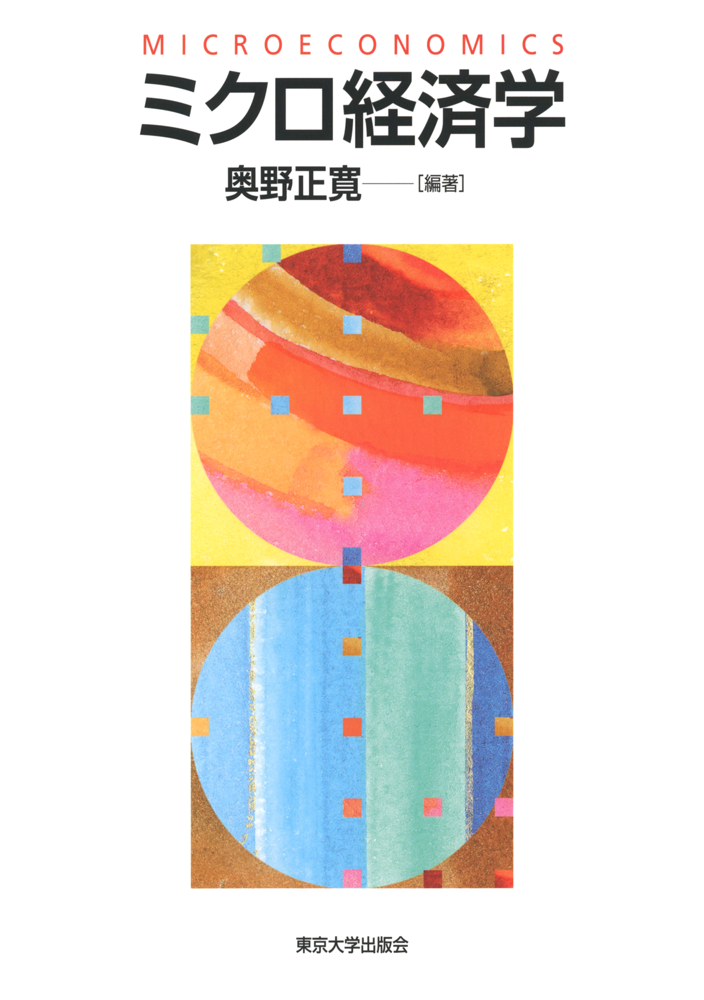
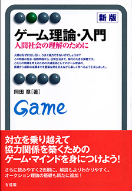
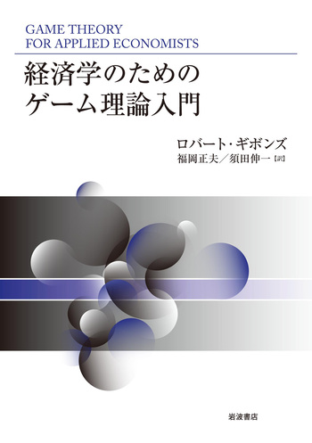

経済学部基礎科目の模試
なかなか過去問が入手できない方や，もっと問題演習をしたいという学生に向けて模試を作成しています。
担当教員によって問題の偏りがあったり試験範囲が異なったりするようですが，模試では該当するすべての範囲から 満遍なく出題しています。問題の難易度は，実際の試験問題よりもやや難しいかもしれませんが，同志社大学と同等 または上位の他大学で出題されていてもおかしくない程度に設定しています。
模試はすべて過年度に作成していますが，学部全体で大幅なカリキュラムの刷新などが無い限りは2026年度以降も 活用できると思います。もし現在1,2回生の方で，模試の出題内容といまの講義内容がまったく合っていないという 場合は，その旨をメールで伝えてくださると幸いです。
第二外国語を徹底比較！～客観的なデータで戦略的に選ぼう！～
春学期の履修登録前に新入生が必ず悩むといっていいのが，どの第二外国語を選択するか。DE-Hackでは、DUETの過去3年間（2023〜2025年度）の成績データに基づき、6言語の平均GPAと落単率（F率）を比較しました。

データから読み解く3つの真実
- スペイン語はとにかく難しい！
2025年度の平均GPAは1.60、落単率は24.48%となっていて，約4人に1人が落単する超過酷な言語です。 - ドイツ語の圧倒的安定感
最もGPAが高く、落単率が低いのがドイツ語。2025年度も平均GPAは2.58、落単率は8.83%と高水準です。実は，同志社大学ではドイツ語の学習が優遇されています。 例えば，同志社大学には， 「ドイツ語・異文化理解EUキャンパスプログラム」 が設置されていて，ドイツ語留学の機会が比較的多いです。また，同志社大学はドイツ語検定の試験会場になっています（ 「外国語学習ガイドブック」に記載）。このことから，ドイツ語学習者にとっては学習環境がかなり充実しているといえます。 - コリア語・中国語の意外な厳しさ
人気のコリア語は落単率が20%を越え、中国語も13〜18%の落単率があります。親しみやすさだけで選ぶと痛い目を見る可能性があります。
DE-Hackからのアドバイス
興味のある言語を選ぶのも大切ですが、将来のゼミ選考などでGPAが必要になる場合も想定して、
このデータを参考に落単のリスクが低い第二外国語を選択するのも一つの賢い手です。
経済学部生はクエストルームを使おう！
良心館にはクエストルームという場所があるのを知っていましたか？
今出川キャンパスでは，多くの学生がラーニングコモンズあるいは空き教室で 自習していますが，どこもいっぱいでなかなか良い場所が見つかりませんよね。 しかし，クエストルームは経済学部生しか入室できず，日中も非常に空いているので 快適に利用できます。
グループで利用する場合は，グループワークエリアを予約することができるので， 友達と集まってテスト勉強をしたり，ゼミの活動に取り組むことができます。また， ホワイトボードやデスクトップが利用でき，ラップトップを借りることができます。


大阪府民はサテライトキャンパスを使おう！
同志社大学は実は大阪にもキャンパスがあります。
大阪や神戸から今出川キャンパスまでは1時間半～2時間かかることも珍しくありません。 オンライン授業を視聴したり自習したりするために今出川に来るのはしんどい，そんな実家通いの学生は大阪サテライトキャンパスがオススメです。 デスクトップが設置されている他，新聞やビジネス雑誌が閲覧でき，特に就活で業界研究をする際に活用できます。
場所は阪神百貨店の裏側のビルで，大阪駅から徒歩3分程の距離です。


科目別オススメテキスト
経済学部の基礎科目や専門科目は，適切にテキストを活用することで，より単位取得が簡単になります。 ここでは，ミクロ経済学・マクロ経済学・計量経済学（統計学）・経済数学の4分野に絞ってオススメの参考書を紹介していきます。
ミクロ経済学
該当科目: 初級ミクロ経済学Ⅰ/Ⅱ，中級ミクロ経済学１/２，ゲーム理論
まず，上記科目全般で活用できるのは以下のテキストです。
・神取道宏(2014)『ミクロ経済学の力』日本評論社
・奥野正寛(2008)『ミクロ経済学』東京大学出版会
2冊とも東京大学の講義ノートを元になって生まれた教科書です。前者は図表や具体例が豊富で， 数学的な概念を直観的に説明しているので，初学者でも内容が理解しやすいです。一方で，後者は より数学を用いて厳密な説明がされていて，ある程度ミクロ経済学の概念を理解していることが前提となります。 この2冊は，同志社大学経済学部の初級ミクロⅠ/Ⅱ及び中級ミクロⅠ/Ⅱの内容をカバーしています。初級ミクロは1年次秋 からの開講となりますが，秋学期開始までに入手しておくのが望ましいです。学習意欲の高い学生は1年次春から 予習のために活用するのもいいでしょう。


ゲーム理論に特化して学びたい場合は以下のテキストがオススメです。下にいくほど難易度が高めです。
・岡田章(2014)『ゲーム理論・入門 --人間社会の理解のために』有斐閣アルマ
・渡辺隆裕(2021)『一歩ずつ学ぶ ゲーム理論 -数理で導く戦略的意思決定』裳華房
・ロバート・ギボンズ(2020)『経済学のためのゲーム理論入門』岩波書店
1冊目はゲーム理論の各概念がコンパクトに解説されていて，持ち運びに便利なB5サイズとなっています。2冊目は1冊目よりも丁寧に解説されていて，演習問題が豊富です。 3冊目は海外のテキストを日本語に翻訳したもので，他の2冊よりも数学を用いて厳密に解説しています。ゲーム理論や数学的素養の習熟度に応じて自分に適したテキストを選んで活用してください。

